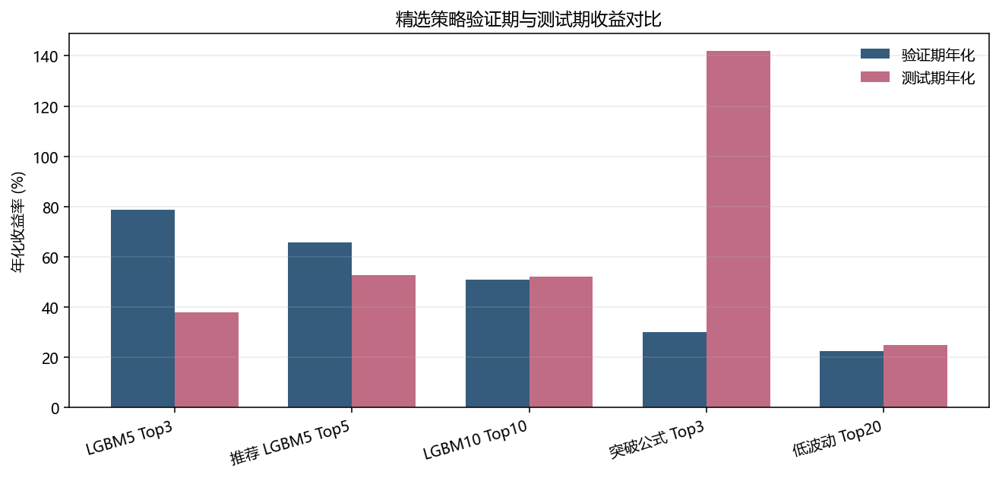
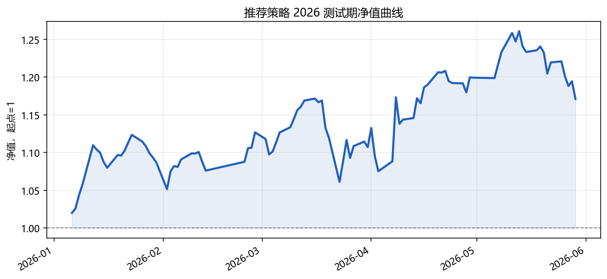
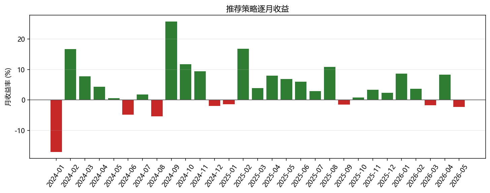

生成日期：2026-06-30
研究目录：sector_strategy_research/
核心假设：每个同花顺板块指数都存在一个无跟踪误差、可按收盘价成交的跟踪基金。
本研究单独评估“只交易板块基金”的短周期轮动策略。策略目标不是预测单个股票，而是构造一个可以直接反映未来 5 至 10 个交易日板块收益强弱的板块强度评分，并据此每日或定期持有评分最高的少数板块。
在当前无交易成本、无跟踪误差、无容量约束的理想化设定下，板块强度模型能够在 2024-2025 验证期和 2026 确认测试期同时跑赢同宇宙等权基准。综合收益、回撤和分散性后，当前推荐方案为 recommended_lgbm5_top5：使用 LightGBM 预测未来 5 日板块收益横截面分位，每日持有行业与概念板块中的 Top5。该方案验证期年化收益 65.67%，夏普 1.78，最大回撤 -29.03%；2026 测试期年化收益 52.69%，夏普 1.71，最大回撤 -9.42%。
需要强调：这不是实际 ETF 回测。它更像一个板块强度信号的上限实验，目的是判断板块层面的短线收益是否可被历史量价状态捕捉。真实落地前必须加入可交易 ETF 映射、跟踪误差、手续费、滑点、容量和调仓约束。
本部分研究回答三个问题：
这个实验刻意独立于前面的个股深度学习和 Top50 因子挖掘目录，所有代码与产物都保存在 sector_strategy_research/ 中，避免污染原有研究线。
使用已经拉取好的同花顺板块数据：
data/sector/ths_daily.parquetdata/sector/ths_index.parquetindustry_concept 宇宙，即行业 I 加概念/主题 N。研究采用严格时间切分：
参数选择主要看验证期表现，测试期只用于确认，不反向修改策略。
对每个板块，在信号日 t 收盘后生成特征，未来收益从下一个交易日开始计算。模型标签包括：
future_ret_5d：未来 5 个交易日收益。future_ret_10d：未来 10 个交易日收益。future_ret_rank：同一交易日所有板块未来收益的横截面分位。模型训练使用未来收益分位作为目标，而不是直接使用原始收益，目的是降低极端涨跌对模型的支配，让模型学习“横向比较谁更强”。
所有输入特征只使用当前及过去信息。核心特征包括：
ret_1d/3d/5d/10d/20d/60d_rankvolatility_10d_rank、volatility_20d_rankrisk_adj_5_20_rank、risk_adj_10_20_rank、risk_adj_20_60_rankclose_pos_20d_rank、drawdown_60d_rankma_gap_5_20_rank、ma_gap_10_60_rankvolume_z_20d_rank、turnover_z_20d_rankrange_1d_rank这些特征都先在板块自身历史上计算，再做每日横截面排名，因此既保留了时间状态，又降低了跨年代成交额、成交量、指数点位变化带来的尺度漂移。
策略为长仓等权 TopK：
K 个板块。本轮没有引入做空、杠杆、止损、成本、容量或人工筛选。
本轮比较两类方法：
从验证结果看，LightGBM 5 日目标显著优于大多数手写公式；但可解释公式在 2026 测试期出现很强表现，说明简单突破状态本身也可能含有可交易信息。推荐方案没有直接选择验证期最高收益的 Top3，而是选择 Top5 版本，因为它在 2026 测试期回撤更低、收益更高、分散性更好。
本轮总计运行 276 个配置，包括：
主要评价指标：
由于这是板块基金假设实验，收益指标暂时不扣交易成本。换手率在本阶段只作为落地难度指标。
验证期最高夏普方案为 industry_concept__score_lgbm_5d__top3__rb1，验证期夏普 1.98。不过最终推荐没有机械选择最高夏普方案，而是结合以下原则：
因此本轮推荐 recommended_lgbm5_top5 作为当前版本。
| 策略 | Val年化 | Val夏普 | Val最大回撤 | Test年化 | Test夏普 | Test最大回撤 | Test平均换手 |
|---|---|---|---|---|---|---|---|
| 激进版 LGBM5 Top3 日调仓 | 78.86% | 1.98 | -28.13% | 38.00% | 1.24 | -13.26% | 83.33% |
| 推荐版 LGBM5 Top5 日调仓 | 65.67% | 1.78 | -29.03% | 52.69% | 1.71 | -9.42% | 83.57% |
| 分散版 LGBM10 Top10 日调仓 | 50.90% | 1.54 | -30.55% | 52.10% | 1.94 | -7.00% | 71.35% |
| 可解释公式 行业突破 Top3 | 30.04% | 0.98 | -23.46% | 141.92% | 2.26 | -23.02% | 86.02% |
| 稳定公式 低波动 Top20 | 22.34% | 0.94 | -23.96% | 24.98% | 0.99 | -9.21% | 51.59% |

| 排名 | 策略ID | Val年化 | Val夏普 | Val最大回撤 | Test年化 | Test夏普 | Test最大回撤 |
|---|---|---|---|---|---|---|---|
| 1 | industry_concept__score_lgbm_5d__top3__rb1 |
78.86% | 1.98 | -28.13% | 38.00% | 1.24 | -13.26% |
| 2 | industry_concept__score_lgbm_5d__top5__rb1 |
65.67% | 1.78 | -29.03% | 52.69% | 1.71 | -9.42% |
| 3 | industry_concept__score_lgbm_5d__top10__rb1 |
62.69% | 1.74 | -30.09% | 31.86% | 1.25 | -9.15% |
| 4 | industry_concept__score_lgbm_5d__top20__rb1 |
53.39% | 1.57 | -31.02% | 30.99% | 1.22 | -9.75% |
| 5 | industry_concept__score_lgbm_10d__top5__rb5 |
51.61% | 1.55 | -32.38% | 8.59% | 0.47 | -11.06% |
| 6 | industry_concept__score_lgbm_10d__top10__rb1 |
50.90% | 1.54 | -30.55% | 52.10% | 1.94 | -7.00% |
| 7 | industry_concept__score_lgbm_10d__top5__rb1 |
50.94% | 1.52 | -29.97% | 34.51% | 1.33 | -9.45% |
| 8 | industry_concept__score_lgbm_10d__top20__rb1 |
45.94% | 1.44 | -31.58% | 27.14% | 1.17 | -8.34% |
为了避免固定切分给人“一次性挑模型”的感觉，我补充做了滚动验证。机器学习模型采用逐年 walk-forward：验证某一年时，只使用上一年年底以前已经兑现标签的数据训练；公式评分没有训练过程，因此直接展示 2016 年以来的逐年表现。2026 年只统计至 2026-05-29。
| 策略 | 起始年 | 结束年 | 拼接年化 | 拼接夏普 | 最大回撤 | 平均换手 | 正收益年份 |
|---|---|---|---|---|---|---|---|
| 滚动 LGBM5 Top5 | 2018 | 2026 | 36.44% | 1.33 | -34.26% | 81.00% | 8/9 |
| 滚动 LGBM10 Top10 | 2018 | 2026 | 30.10% | 1.21 | -33.34% | 74.07% | 8/9 |
| 公式 行业突破 Top3 | 2016 | 2026 | 48.28% | 1.49 | -36.89% | 77.40% | 10/11 |
| 公式 低波动动量 Top20 | 2016 | 2026 | 17.28% | 0.80 | -33.13% | 45.53% | 8/11 |

滚动 LGBM5 Top5 的逐年表现如下：
| 年份 | 年化 | 夏普 | 最大回撤 | 基准年化 | 超额年化 |
|---|---|---|---|---|---|
| 2018 | -14.97% | -0.45 | -27.35% | -32.85% | 26.06% |
| 2019 | 65.62% | 2.16 | -18.13% | 30.71% | 26.50% |
| 2020 | 61.06% | 1.97 | -11.85% | 17.13% | 37.04% |
| 2021 | 38.64% | 1.62 | -13.08% | 25.34% | 10.61% |
| 2022 | 10.83% | 0.53 | -22.33% | -11.97% | 25.93% |
| 2023 | 11.44% | 0.69 | -13.15% | 5.62% | 5.67% |
| 2024 | 60.84% | 1.39 | -29.60% | 4.72% | 55.09% |
| 2025 | 77.84% | 3.15 | -6.65% | 36.46% | 28.96% |
| 2026 | 65.83% | 2.41 | -5.26% | 0.22% | 64.35% |
这组结果的核心含义是：推荐方向不只是在 2024-2025 固定验证期表现好。滚动 LGBM5 Top5 从 2018 到 2026 的样本外拼接年化为 36.44%，正收益年份为 8/9。公式突破 Top3 在 2016-2026 的长期结果也较强，但年度波动更大，说明它更适合作为可解释基线或和机器学习评分组合，而不一定单独作为最终方案。
推荐策略 recommended_lgbm5_top5 在 2026 测试期共 94 个交易日，总收益 17.10%，年化收益 52.69%，最大回撤 -9.42%，平均换手 83.57%。


| 特征 | 重要性 |
|---|---|
ma_gap_10_60_rank |
1171 |
volatility_20d_rank |
1138 |
drawdown_60d_rank |
1087 |
ret_60d_rank |
1066 |
volatility_10d_rank |
1006 |
risk_adj_20_60_rank |
892 |
ret_20d_rank |
879 |
risk_adj_10_20_rank |
706 |
ma_gap_5_20_rank |
692 |
close_pos_20d_rank |
635 |
前 10 个重要特征以中期均线偏离、20 日波动、60 日回撤、60 日收益和风险调整收益为主。这说明模型并非只看一日涨跌，而是在识别“中期趋势位置 + 波动状态 + 风险调整强度”的组合状态。
最新可用测试信号日：20260528。
| 排名 | 板块代码 | 板块名称 | 模型分数 |
|---|---|---|---|
| 1 | 884018.TI |
油服工程 | 0.5889 |
| 2 | 700455.TI |
石油与天然气的储存和运输(A股) | 0.5673 |
| 3 | 700460.TI |
工业气体(A股) | 0.5585 |
| 4 | 885931.TI |
PVDF概念 | 0.5528 |
| 5 | 884185.TI |
贵金属Ⅲ | 0.5483 |
板块指数天然做了个股噪声平均化，短周期行业轮动、主题拥挤、资金偏好和风险偏好变化更容易在板块层面表现出来。相比个股，板块的 idiosyncratic noise 较低，趋势状态和波动状态也更稳定，因此简单的非线性模型就可能捕捉到可用信号。
recommended_lgbm5_top5 的含义不是“永远买这 5 个板块”，而是每天用历史状态估计未来 5 日横截面收益分位，然后选择当日最可能领先的 5 个板块。这个信号可单独做板块轮动，也可以作为个股 Top50 策略的行业偏好权重。
ths_index 是当前可见板块列表，历史退市或调整过的板块需要进一步核对。在当前实验设定下，板块强度策略是有研究价值的。短周期板块轮动不需要复杂深度学习模型，使用横截面排名特征加 LightGBM 就已经能得到不错的验证与测试表现。当前推荐 recommended_lgbm5_top5 作为后续研究基线：它比 Top3 激进版更分散，测试期最大回撤更低，同时保留较高收益。
下一阶段不应只追求更高纸面收益，而应优先解决三个落地问题：
sector_strategy_research/run_experiments.py：实验主程序。sector_strategy_research/summarize_results.py：结果汇总脚本。sector_strategy_research/artifacts/EXPERIMENT_RESULTS.csv：全部 276 个实验配置结果。sector_strategy_research/artifacts/SELECTED_STRATEGY_COMPARISON.csv：精选策略验证/测试对比。sector_strategy_research/artifacts/recommended_top5_test_positions.parquet：推荐策略 2026 测试期每日 Top5。sector_strategy_research/artifacts/recommended_top5_test_equity_curve.csv：推荐策略 2026 测试净值曲线。sector_strategy_research/artifacts/lgbm_industry_concept_5d_importance.csv：LightGBM 5 日模型特征重要性。sector_strategy_research/artifacts/ROLLING_VALIDATION_RESULTS.csv：滚动验证年度与汇总指标。sector_strategy_research/artifacts/ROLLING_VALIDATION_REPORT.pdf：滚动验证补充报告。报告中的验证期为 2024-2025，测试期为 2026-01-01 至 2026-05-29。所有收益均为未扣成本的指数基金假设收益。由于本研究目的是先确认板块强度信号是否存在，实际交易可行性需要在下一轮引入 ETF 映射和成本模型后重新评估。